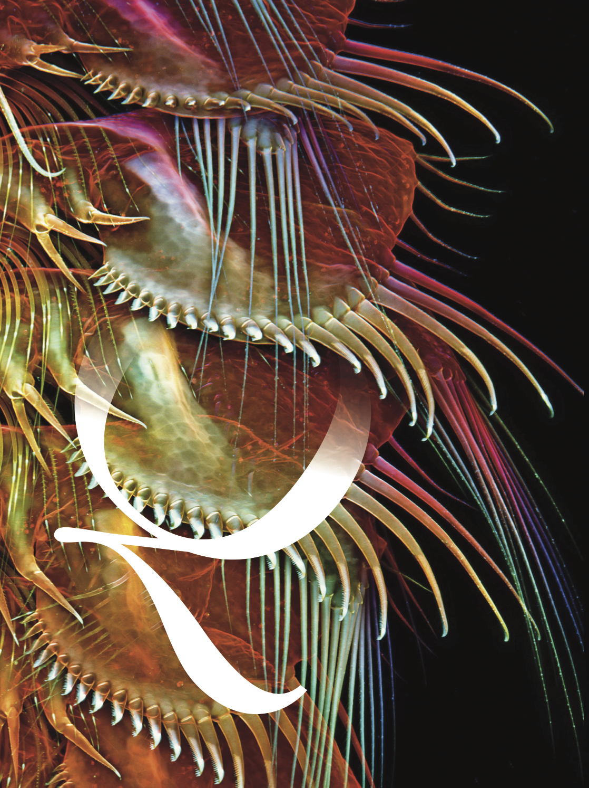
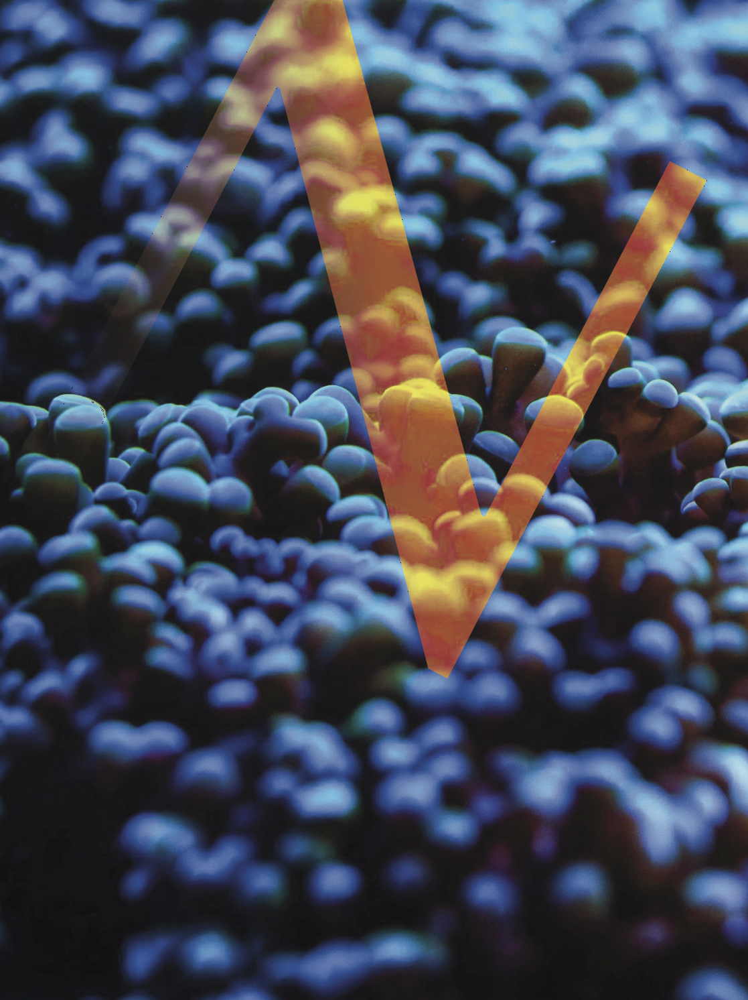
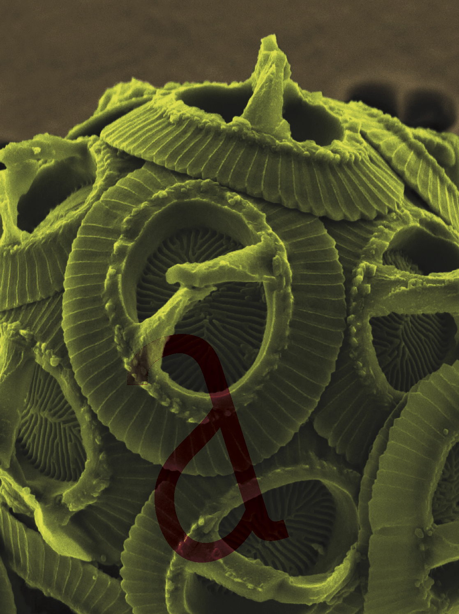
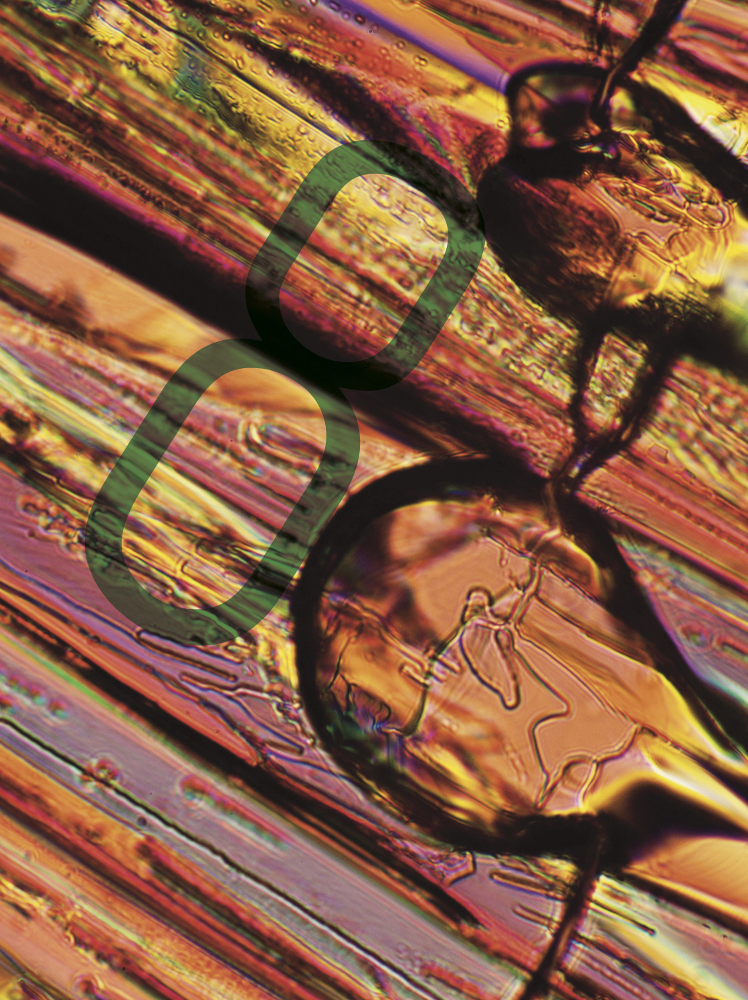
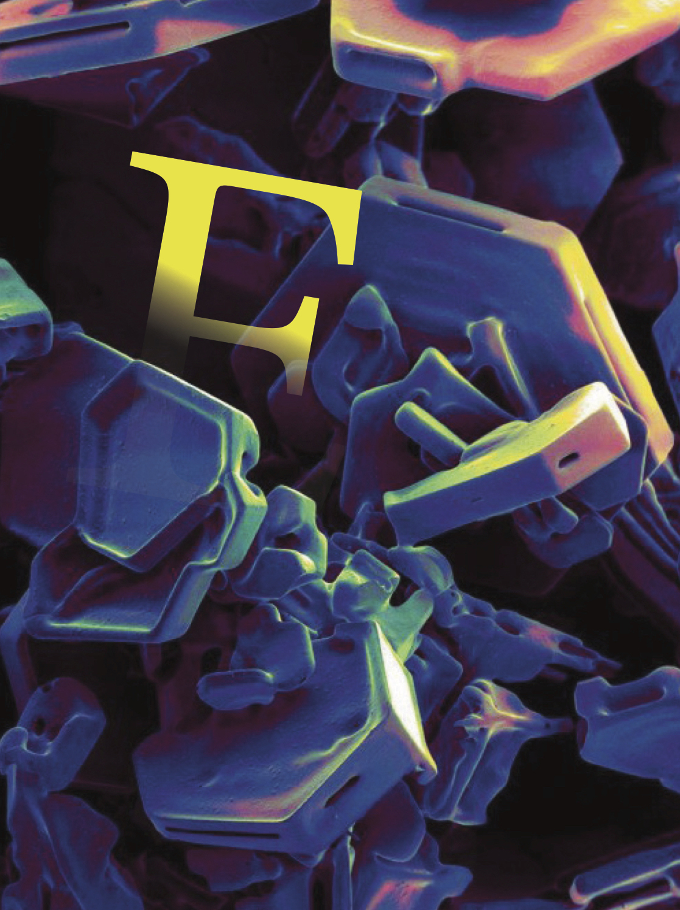
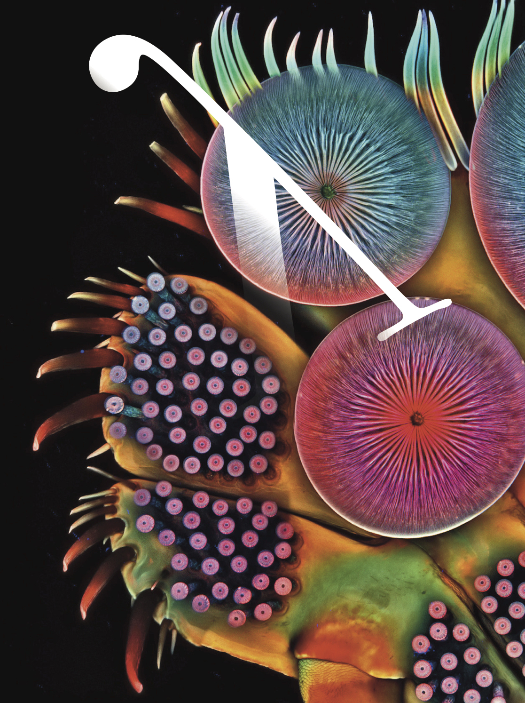
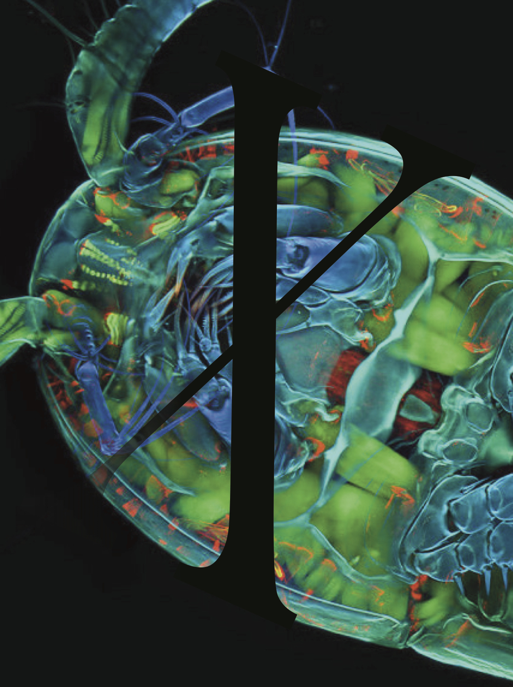
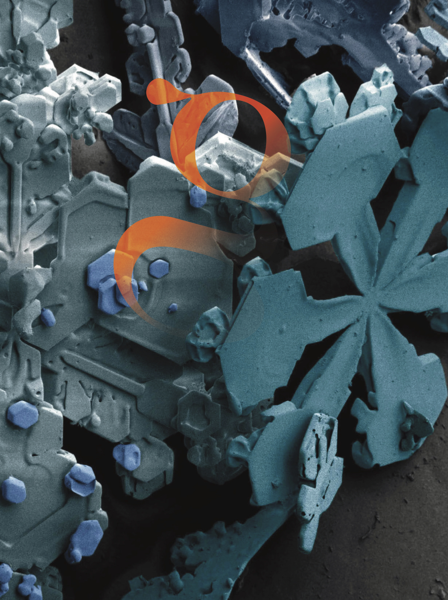
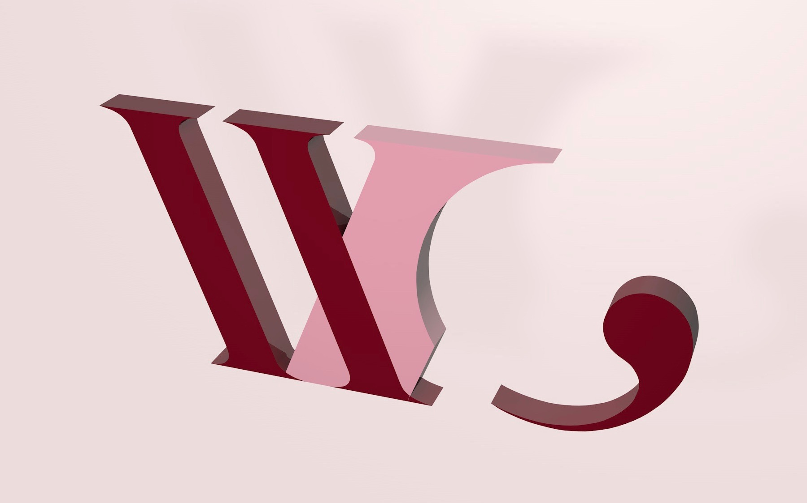
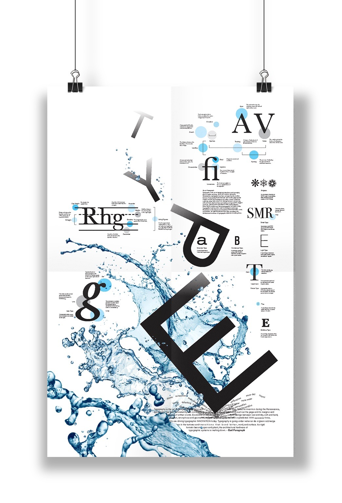

Standard-Utopian
Examples of Standard-Utopian Design
Providence Memorial Flags: Based on research upon standard flag design
Infographic: Straightforward delivery
Type & Image Studies: Designed for the sake of pleasing the eye








What Cheer Branding: Simplified letterform, following standard branding solutions



Type Poster: Informative design

Architectural Photography: Traditional compositioning without additional voice